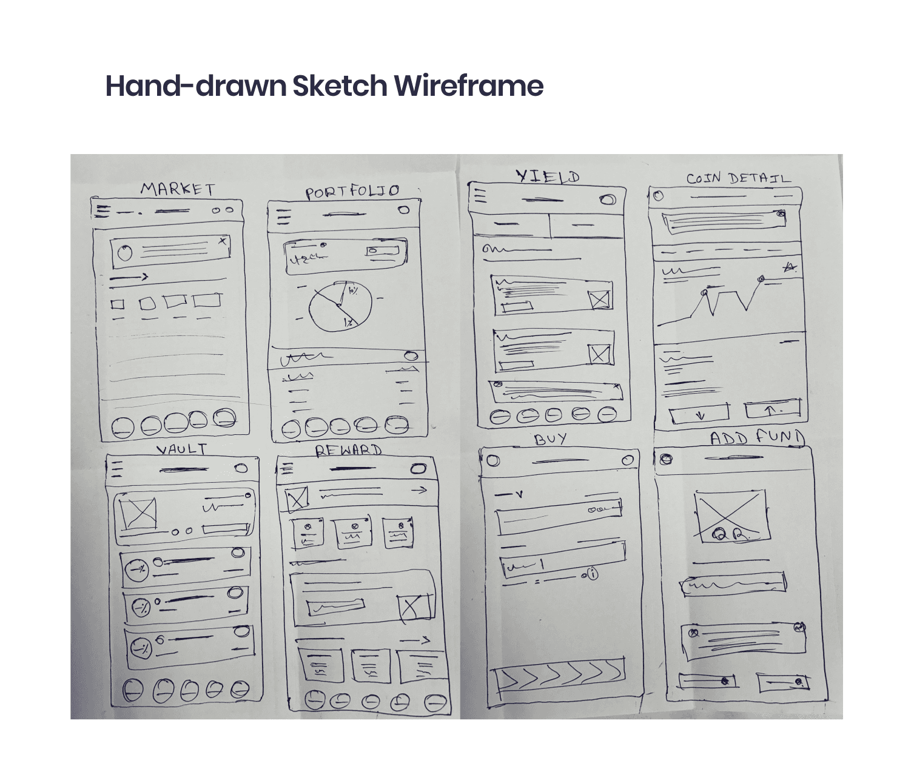
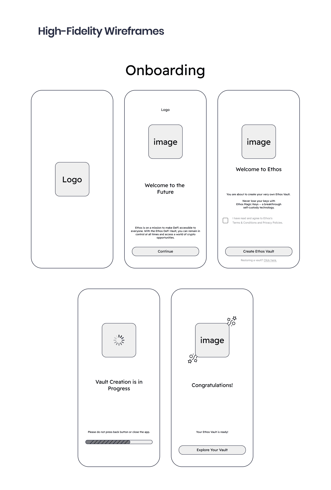
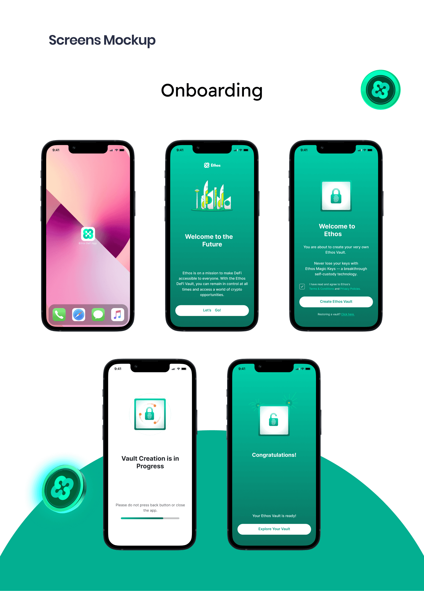
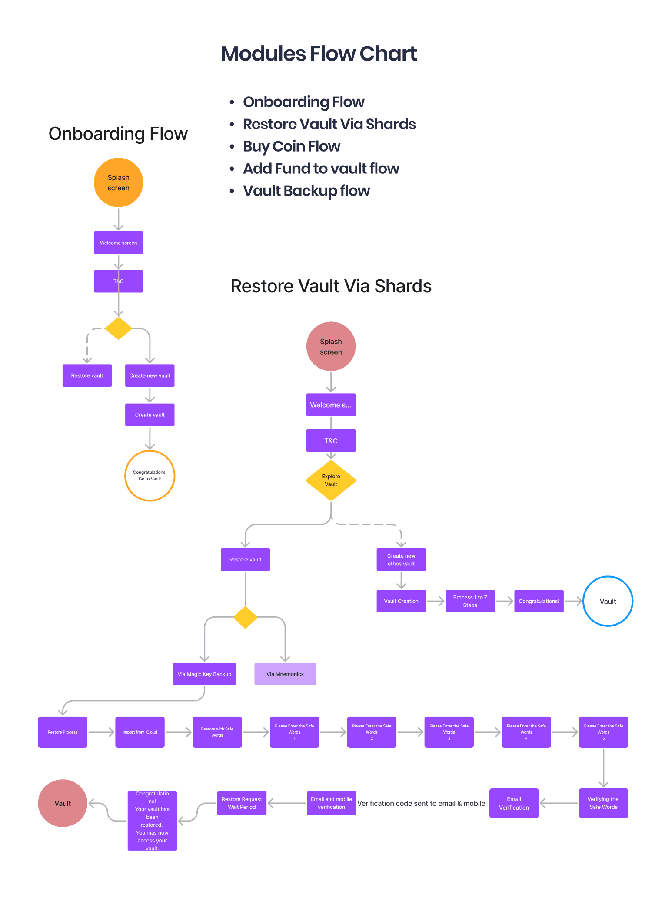
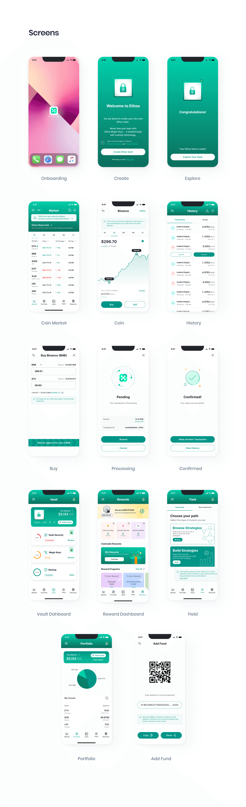

Ethos Self-Custody Vault
A self-custody wallet for storing and managing crypto assets, designed to make a complex financial experience feel simpler and more approachable. Ethos is a wallet, rather than an exchange or protocol.

The challenge
Complex interfaces created a daunting entry point for people new to crypto. Concerns about hacking and fraud weakened trust, while inefficient portfolio tools made it harder to track and understand holdings. The challenge was to address interface complexity, confidence, and asset management together.
The design strategy
A user-focused platform needed to serve newcomers as well as experienced users. The direction paired simpler interactions with clearer portfolio management, helping people navigate the product and understand their crypto holdings.
Security & confidence
The published solution describes two-factor authentication and encryption alongside educational content. These elements support a more informed experience and address the sense of vulnerability that can accompany managing crypto assets.
Portfolio management
The case study describes tools for tracking and analyzing assets with real-time insights. Support for a diverse range of assets and applications was part of the broader product direction.
The result
The reported design response is a more accessible, user-friendly experience: simpler entry into the product, clearer asset information, and educational support. The original case study reports improvements in onboarding, retention, and time spent on the website, shown below.
Making the experience clearer.
Making the impact visible.
Figures reported in the original case study ↗.
From understanding
to a considered experience.
User interviews, surveys, and in-app analytics informed an understanding of pain points and user needs. Competitor apps and industry trends provided additional context for the design direction.
- 01
Research & Analysis
- 02
Information Architecture
- 03
Wireframing & Prototyping
- 04
Usability Testing
- 05
Visual Design & Style Guide
Inside the work
Original case study ↗




Want to talk through the work?
I’m happy to share more about my process and contribution.
Let’s talk ↗